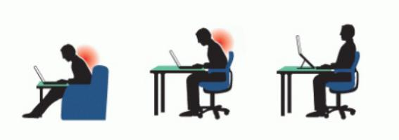
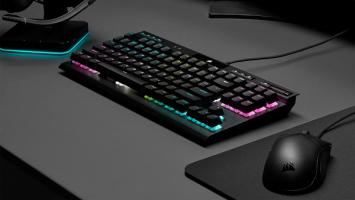
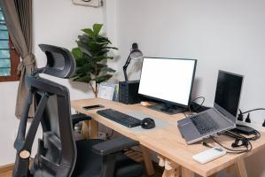
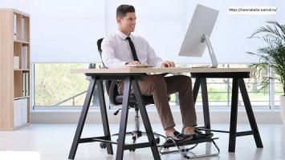
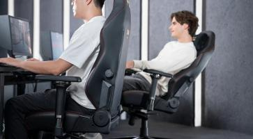
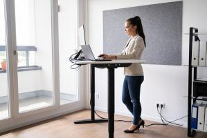
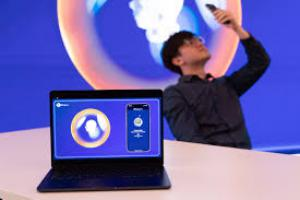

Почему работа на ноутбуке дома представляет собой эргономический риск?

Ноутбуки не были разработаны как основной компьютер для использования в течение всего дня. Они были предназначены для мобильности во время встреч и путешествий. То есть, при использовании на работе они обычно подключаются к док-станциям, которые позволяют проецировать данные на большие мониторы. Теперь, напротив, миллионы людей работают дома с ноутбука, что приводит к значительным рискам для здоровья при длительном использовании ноутбука.
То, как вы настраиваете и используете свой ноутбук, может повлиять на уровень нагрузки на вашу шею и спину. Вот 10 советов, как уберечь позвоночник от боли, работая продуктивно на ноутбуке.
1. Снимите ноутбук с колен.
Несмотря на то, что это называется ноутбуком, вам вряд ли захочется использовать его на коленях.
В этой позе вам часто приходится сутулиться и вытягивать голову вперед, чтобы видеть экран, что нагружает шейный отдел позвоночника десятками дополнительных фунтов давления. 1Если вам все же приходится работать без стола, например, в поезде, попробуйте положить ноутбук на сумку или портфель, чтобы приподнять экран.
2. Поднимите экран выше
Идеальная высота и угол наклона ноутбука позволяют вам легко смотреть на экран, не сгибая и не поворачивая шею. Поднимите ноутбук на несколько дюймов над столом, поместив его на устойчивую опорную поверхность, например, на подставку для ноутбука или стопку толстых книг. Ваши глаза должны естественным образом попадать в верхнюю треть экрана, когда вы смотрите прямо перед собой.
3. Используйте отдельную клавиатуру и мышь или купите отдельный экран/монитор.

При длительной работе на ноутбуке рекомендуется сделать одно из двух: 1) использовать внешнюю клавиатуру и мышь и правильно расположить экран ноутбука на уровне глаз или 2) использовать внешний монитор на уровне глаз и расположить клавиатуру ноутбука на высоте, позволяющей плечам и рукам расслабиться. Локти должны быть согнуты под углом 90 градусов, прижаты к телу, а запястья должны находиться в нейтральном положении при наборе текста. Такая поза помогает не округлять плечи и не растягивать мышцы шеи.
4. Увеличьте размер экрана

Хотя ноутбуки разработаны для портативности и простоты использования, убедитесь, что экран вашего ноутбука достаточно большой для ваших нужд. Меньший экран может заставить вас напрягаться, чтобы видеть текст и объекты. Если вы обнаружили, что наклоняетесь вперед, чтобы читать с экрана, вы также можете увеличить размер шрифта.
5. Поднимите ноги.

Если вам приходится поднимать стул, чтобы удобно расположить руки и запястья, проверьте, под каким углом расположены ваши ноги. Ваши ступни должны ровно стоять на полу, а колени должны быть на одной высоте с бедрами. Если ваши бедра слишком высоко или ваши ступни не достают до пола, используйте ступеньку или блок для поддержки нижней части ступней. Это может помочь вам поддерживать нейтральное положение поясничного отдела позвоночника и снизить нагрузку на поясницу.
6. Найдите эргономичное кресло.

Тип кресла, на котором вы сидите, работая с ноутбуком, имеет решающее значение. Любое офисное кресло с полной регулировкой и поясничной поддержкой может подойти, но вам нужно убедиться, что вы правильно его настроили. Если у вашего кресла нет достаточной поддержки, вам может понадобиться поясничный валик. Не забывайте сидеть полностью откинувшись назад в кресле, чтобы, когда вы опираетесь на него, поясничная поддержка помогала поддерживать естественный изгиб в пояснице. Что касается положения шеи и головы, ваши уши всегда должны быть выше плеч, а не впереди.
7. Делайте перерывы
Установите напоминание на телефоне, чтобы делать небольшой перерыв каждые полчаса или около того. Отведите взгляд от экрана и дайте ему отдохнуть на чем-то вдалеке. Вы можете делать простые растяжки за своим столом, например, растягивать шею, плечи, руки и ноги. Каждый час выходите из-за стола, чтобы пройтись, чтобы разогнать кровь и расслабить мышцы. Если нет возможности ходить, по крайней мере встаньте, потянитесь и подвигайтесь. Люди — подвижные существа и не должны сидеть на месте целый день.
Посмотрите видео «4 простых упражнения на растяжку при болях в шее и плечах»
8. Используйте свой ноутбук стоя

Для людей, которые проводят много времени за работой на ноутбуках, попробуйте проводить час или два каждый день, используя свой ноутбук стоя, а не сидя в кресле. Вам понадобится отдельная клавиатура и мышь, а также многоуровневая установка, чтобы делать это, не напрягая шею. Столы для работы стоя являются популярными вариантами. Преобразователи для настольных компьютеров позволяют вам сохранить свой стол и временно превратить его в стол для работы стоя.
9. Путешествуйте налегке
Если вы обычно таскаете свой ноутбук с работы домой и обратно, купите дублирующий шнур питания и другие аксессуары для ноутбука — так вы сможете оставлять их в каждом месте, а не носить лишний груз туда и обратно. Вы также можете использовать рюкзак с двойными мягкими плечевыми ремнями, чтобы не надевать сумку только на одно плечо. Если ваш ноутбук и аксессуары кажутся слишком тяжелыми, лучшим выбором может стать переноска на колесах.
10. Рассмотрите возможность использования приложения для контроля осанки

Используйте технологию в своих интересах, используя свой ноутбук для контроля осанки и предоставления вам полезных напоминаний. Для Mac и ПК доступно множество приложений для осанки, которые могут выполнять различные функции, в том числе:
Используйте камеру ноутбука, чтобы следить за своей осанкой и получать уведомления о том, когда следует сесть прямее.
Напомните, когда нужно делать перерывы.
Простые упражнения на ррастяжку за рабочим столом.
Также доступны носимые устройства для измерения осанки позвоночника и отправки данных в приложение на вашем телефоне или планшете. Хотя некоторые люди могут обнаружить пользу от приложений для осанки и носимых устройств, важно отметить, что некоторые люди могут не получить ее, и для определения их эффективности необходимы дополнительные исследования.
Обратите внимание на то, как вы устанавливаете свой ноутбук. Тщательное рассмотрение имеет большое значение для облегчения и предотвращения болей в спине и шее.